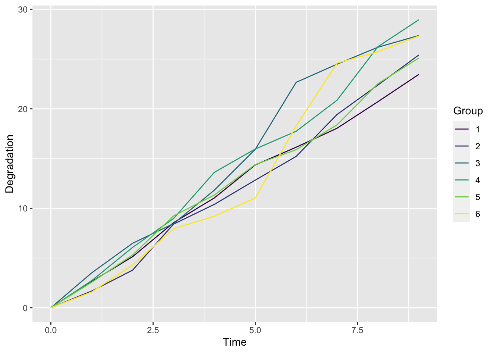
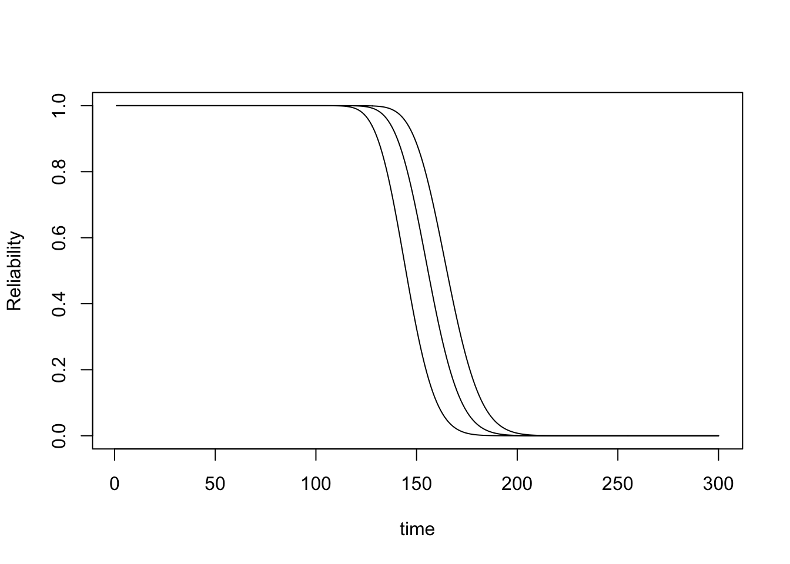

逆高斯退化过程
1. IG 退化过程模型
来源：Ye, Z.-S. and M. Xie (2015). “Stochastic modelling and analysis of degradation for highly reliable products.” Applied Stochastic Models in Business and Industry 31(1): 16-32.
虽然 Wiener 过程和 Gamma 过程在退化建模中得到了广泛的应用，但这两种模型在实际应用中无法拟合大量退化数据。当这两个过程失败时，另一个选择是逆高斯(inverse Gaussian, IG)过程。
如果过程\(\{Y(t);t \geqslant 0\}\)具有独立的 IG 分布增量，则称为基本的 IG 过程，即\(Y(t) \sim \operatorname{IG}\left(\mu \Lambda(t)， \lambda \Lambda^2(t)\right)\)，其中\(\Lambda(t)\)是非负且单调递增的。IG \((a, b), a, b>0\) 的PDF为 \[ f_{\mathrm{IG}}(y ; a, b)=\left(\frac{b}{2 \pi y^3}\right)^{1 / 2} \exp \left[-\frac{b(y-a)^2}{2 a^2 y}\right], y>0 \] 在Wang和Xu[48]最近的一项研究之前，IG过程很少被用作退化模型。这可能是因为这个过程没有物理解释。因此，可靠性工程师可能不知道如何以及何时使用该过程进行退化建模。为了弥补这一差距，Ye and Chen [49]探索了这一过程的物理意义。他们发现 IG 过程与 Gamma 过程类似，也是复合泊松过程的极限，但震动大小分布与 Gamma 过程不同。此外，他们还发现，与 Gamma 过程相比，IG 过程在合并协变量和随机效应方面非常灵活。灵活性来自于Wiener过程和IG过程之间的逆关系，如下所示。
回想一下，维纳过程\(X(u)=v u+\sigma \mathrm{B}(u)\)到一个固定阈值的第一次传递时间\(\Lambda\)是一个IG随机变量\(Y \sim \operatorname{IG}\left(\Lambda / v， \Lambda^2 / \sigma^2\right)\)。如果我们有一系列由\(t\)索引的阈值\(\Lambda\)，我们将有一系列对应的失败次数\(Y(t)\)。很容易表明\(Y(t)\)遵循一个IG过程\(Y(t) \sim \operatorname{IG}\left(\mu \Lambda(t)， \Lambda \Lambda^2(t)\right)\)，其中\(\mu=1 / \nu\)和\(\ Lambda =1 / \sigma^2\)。有趣的是，只要Wiener过程中有一种方法可以合并协变量和随机效应，那么IG过程中也有相应的方法可以通过逆关系来合并协变量和随机效应。例如，在维纳过程中，我们可以假设\(\nu\)是正常的，\(\sigma\)是固定的，或者我们可以假设\(\sigma^{-2} \sim \operatorname{Gamma}(r， \delta)\)和\(\left[v \mid \sigma^2\right] \sim \mathrm{N}\left(v， \theta \sigma^2\right)\)。因此，我们可以假设\(\mu=1 / v\)是正常的，或者假设在IG进程中\(\lambda=\sigma^{-2} \sim \operatorname{Gamma}(r,\delta)\)和\([1 / \mu \mid \lambda] \sim \mathrm{N}(v， \theta / \lambda)\)。由此得到的IG随机效应模型的边际分布是可处理的。类似地，在\(2.3\)中回顾的Wiener过程中合并协变量的方法可以通过逆关系扩展到IG过程。
在Wang和Xu[48]的工作中，针对IG过程提出了一种基于EM算法的半参数估计方法，其中函数\(\Lambda(t)\)非参数估计。EM算法需要IG过程的条件增量的期望，这是很难得到的。在Ye[50]中导出了期望的闭合表达式。这些结果为IG过程的EM算法的实现提供了便利。Peng等人[51]为IG过程开发了贝叶斯方法。然而，IG过程在退化文献中仍然是新的。退化模拟过程的性质需要进一步探索。
3.1 经典的 IG 过程
来自：Guan, Q., et al. (2019). “Reference Bayesian analysis of inverse Gaussian degradation process.” Applied Mathematical Modelling 74: 496-511.（IG + 客观贝叶斯）
设\(Y(t)\)为产品在\(t\)时刻的退化特性。假设退化路径\(Y(t)\)可以用均值函数\(\Lambda(t)\)和尺度参数\(\lambda\)的IG过程来建模。此时，\(Y(t)\)具有以下属性:
- \(Y(0)=0\)，概率为1;
- 对于 \(t>s>u, Y(t)-Y(s) \geq 0, Y(s)-Y(u) \geq 0\), \(Y(t)-Y(s)\) 与 \(Y(s)-Y(u)\) 相互独立;
- 对于 \(t>s \geq 0\), 每个增量 \(Y(t)-Y(s)\) 都服从 IG 分布 \(I G\left(\Lambda(t)-\Lambda(s), \lambda(\Lambda(t)-\Lambda(s))^2\right)\), 其中 \(\Lambda(t)\) 单调递增的函数, 且 \(\Lambda(0)=0\)。
IG 分布的概率密度函数(pdf) \(I G(a, b)\)为 \[ f_{I G}(x, a, b)=\left[\frac{b}{2 \pi x^3}\right]^{1 / 2} \exp \left\{-\frac{b(x-a)^2}{2 a^2 x}\right\} \] 当\(\Lambda(t)\)是一个线性函数时，\(\Lambda(t \Delta t)-\Lambda(t)=\Lambda(s \Delta t)-\Lambda(s)\)适用于任何\(s \geq 0、t \geq 0\)和\(\Delta t \geq 0\)。也就是说，这个IG过程是一个平稳过程。当\(\Lambda(t)\)为非线性函数时，\(\Lambda(t + \Delta t)-\Lambda(t)\)依赖于\(t\)和\(\Delta t\)。相应的IG过程是非平稳过程。在本研究中，我们假设\(\Lambda(t)=\eta t\)。根据IG过程的性质，很容易计算\(Y(t + \Delta t)-Y(t)\)的期望和方差，即: \[ E[Y(t+\Delta t)-Y(t)]=\Lambda(t+\Delta t)-\Lambda(t)=\eta \Delta t, \] \[ \operatorname{Var}[Y(t+\Delta t)-Y(t)]=\frac{\Lambda(t+\Delta t)-\Lambda(t)}{\lambda}=\frac{\eta \Delta t}{\lambda} . \] 令 \(T\) 为\(Y(t)\)越过临界值\(\omega\)的首达时。此时，我们有 \[ T=\inf \{t \mid Y(t) \geq \omega, t>0\} . \] 对于给定的\(\omega\)，生命周期\(T\)具有以下累积分布函数(cdf) \[ \begin{aligned} F(t) &=P(T \leq t)=P(Y(t)>\omega)=1-F_{I G}\left(\omega ; \Lambda(t), \lambda \Lambda(t)^2\right) \\ &=\Phi\left[\sqrt{\frac{\lambda}{\omega}}(\Lambda(t)-\omega)\right]-e^{2 \lambda \Lambda(t)} \Phi\left[-\sqrt{\frac{\lambda}{\omega}}(\Lambda(t)+\omega)\right] \end{aligned} \] 其中 \(F_{I G}(. ; a, b)\) 是 IG 分布, \(\Phi(\cdot)\) 为标准正态分布的cdf。
对上述公式中的 \(t\) 求导, 此时，\(T\)的 pdf 为 \[ \begin{aligned} f(t)=& \Lambda^{\prime}(t)\left\{\frac{\lambda}{\omega} \phi\left[\frac{\sqrt{\lambda}(\Lambda(t)-\omega)}{\sqrt{\omega}}\right]-2 \lambda \exp [2 \lambda \Lambda(t)] \Phi\left[-\sqrt{\frac{\lambda}{\omega}}(\Lambda(t)+\omega)\right]\right\} \\ &+\Lambda^{\prime}(t)\left\{\frac{\lambda}{\omega} \exp [2 \lambda \Lambda(t)] \phi\left[-\sqrt{\frac{\lambda}{\omega}}(\Lambda(t)+\omega)\right]\right\} \end{aligned} \] 其中\(\phi(\cdot)\)是标准正态分布的PDF。
如果\(t \rightarrow \infty\)，则\(\lambda \Lambda (t) \rightarrow \infty\)和\(Y(t)\)服从渐近正态分布，其均值为\(\Lambda (t)\)，方差为\(\frac{\Lambda (t)}{\lambda}\)。因此，\(T\)的cdf是渐近为 \[ P(T<t) \approx 1-\Phi\left[\frac{\omega-\Lambda(t)}{\sqrt{\Lambda(t) / \lambda}}\right]=\Phi\left[\sqrt{\lambda \Lambda(t)}-\frac{\omega \sqrt{\lambda}}{\sqrt{\Lambda(t)}}\right] \] 当\(\Lambda(t)=\eta t\) [17] 时，Eq.(5)是带有形状参数\((\omega \Lambda)^{-\frac{1}{2}}\)和比例参数\(\frac{\omega}{\eta}\)的BS分布。也就是说，生命期\(T\)的cdf是一个渐近BS分布。因此，寿命\(T\)的平均故障时间(mean time to failure, MTTF)为BS分布的均值，即: \[ M T T F=E(T) \approx \frac{\omega}{\eta}+\frac{1}{2 \eta \lambda} . \] BS分布作为疲劳失效时间数据的有效寿命分布已被广泛研究[18-22]。但是，BS分布不适合作为退化模型，不能替代IG过程模型。
3.1.1 数据模拟产生
# 数据模拟产生
sim_dat = function(group = 6, t = 1:200, para = c(1,0.1)){
# para 指 eta,lambda 根据上面的公式（Lambda = eta * t）
# epoch 指测量次数， group 指组数
delta_t = diff(t)
epoch = length(delta_t)
dat = matrix(NA,epoch,group+1)
dat[,1] = seq(1,epoch)
dat_unit = numeric()
for(i in 1:group){
for(j in 1:epoch) dat_unit[j] = rinvgauss(1, mean=para[1]*delta_t[j], shape=(para[1]*delta_t[j])^2*para[2]) # shape = 1/ dispersion, 我们这是shape
dat[,i+1] = cumsum(dat_unit)
}
dat = data.frame(dat)
dat1 = rbind(rep(0,group+1),dat) # 加入初始值绘制点
colnames(dat1) = c("Time",paste(1:group,sep=''))
return(dat1)
}绘制退化路径图
# 绘制退化路径图
plot_path = function(data = dat1){
# 画图
p = data %>% pivot_longer(paste(1:group),
names_to = "Group",
values_to = "y") %>%
ggplot(aes(Time,y,color = Group)) +
geom_line() +
scale_color_viridis(discrete = T) +
ylab("Degradation") #+
#theme_bw() +
#theme(panel.grid = element_blank())
print(p)
}group = 6
t = 1:50
para = c(3,9) #eta,lambda
dat = sim_dat(group = group, t = t, para = para)
knitr::kable(head(dat))| Time | 1 | 2 | 3 | 4 | 5 | 6 |
|---|---|---|---|---|---|---|
| 0 | 0.000000 | 0.000000 | 0.000000 | 0.000000 | 0.000000 | 0.000000 |
| 1 | 2.886311 | 3.210633 | 2.826436 | 3.183005 | 3.210142 | 4.239415 |
| 2 | 5.547700 | 7.021203 | 5.774596 | 6.043884 | 5.837151 | 7.018783 |
| 3 | 8.078670 | 9.685567 | 8.518245 | 9.440627 | 9.026761 | 11.077175 |
| 4 | 10.911407 | 12.312344 | 11.427766 | 11.995031 | 12.444254 | 13.822832 |
| 5 | 13.432163 | 16.868668 | 14.394812 | 14.926660 | 16.494020 | 16.711461 |

3.1.2 统计推断
令\(Y\left(t_{ij}\right)\)为第\(i\)个测试单元在\(t_{ij}\)时刻测量的退化特性，其中\(i=1， \ldots, n\)和\(j=\) \(1， \ldots, m_i\)。
3.1.2.1 极大似然估计
根据\(\Delta y_{ij}=Y\left(t_{ij}\right)-Y\left(t_{ij -1}\right)， i=1， \ldots n, j=1， \ldots, m_i\)， \((\lambda, \eta)\)的似然函数为 \[ L(\lambda, \eta)=\prod_{i=1}^n \prod_{j=1}^{m_i} f_{I G}\left(\Delta y_{i j}, \eta \Delta t_{i j}, \lambda \eta^2 \Delta^2 t_{i j}\right) . \] 对数似然函数为： \[ \log L(\lambda, \eta)=\sum_{i=1}^n \sum_{j=1}^{m_i}\left(\frac{1}{2} \log (\lambda)+\log (\eta)+\log \Delta t_{i j}-\frac{1}{2} \log \left(2 \pi \Delta y_{i j}^3\right)-\frac{\lambda\left(\Delta y_{i j}-\eta \Delta t_{i j}\right)^2}{2 \Delta t_{i j}}\right) \]
\((\eta, \lambda)\) 对应的 Fisher 信息矩阵为 \[ I(\eta, \lambda)=\left[\begin{array}{cc} \frac{\lambda \eta \tau+2 N}{\eta^2} & \frac{N}{\lambda \eta} \\ \frac{N}{\lambda \eta} & \frac{N}{2 \lambda^2} \end{array}\right], \] 其中， \(\tau=\sum_{i=1}^n \sum_{j=1}^{m_i} \Delta t_{i j}\) 和 \(N=\sum_{i=1}^n m_i\)。
IG_mle = function(par = c(1,1),data = dat){
# 输入：eta,lambda，数据
# 输出：负对数似然函数
mu = par[1]; sigma = par[2]
group = ncol(data) - 1;time = data[,1];y = data[-1,-1]
# 差分得到delta_time和delta_y
delta_time = matrix(rep(diff(time),group),length(diff(time)),group)
delta_y = matrix(NA,nrow(delta_time),group)
for(i in 1:group) delta_y[,i] = cumsub(y[,i])
logl = nrow(delta_time)*group * (1/2 * log(par[2]) + log(par[1])) + sum(log(delta_time) - 1/2 * log(2*pi*delta_y^3) - (par[2]*(delta_y - par[1]*delta_time)^2)/(2*delta_time),na.rm =T)
return(-logl)
}
mle_re = optim(par=c(1,0.5), fn = IG_mle,
data = dat, method = "BFGS", hessian = TRUE)
# mle_re
mle_par = mle_re$par
# 区间估计
mle_up = mle_re$par + sqrt(diag(solve(mle_re$hessian)))*qnorm(0.975)
mle_low = mle_re$par - sqrt(diag(solve(mle_re$hessian)))*qnorm(0.975) #hessian 和协方差矩阵存在逆的关系：https://blog.csdn.net/anruoxi3236/article/details/102005217
mle_summary = round(cbind(mle_low,mle_re$par,mle_up,para),3)
colnames(mle_summary) = c("low","mean","up","true")
knitr::kable(mle_summary) | low | mean | up | true |
|---|---|---|---|
| 3.044 | 3.108 | 3.172 | 3 |
| 2.729 | 3.276 | 3.823 | 9 |
lambda的估计结果存在问题
可靠度公式有问题，代码有问题
为了得到产品可靠度的估计, 只要将 \(\hat{\eta} 、 \hat{\lambda}^2\) 代人时间 \(t\) 的可靠度的表达式（1-F(t)）, 即 可得到可靠度的点估计为 \[ \begin{aligned}R(t) &= 1-\Phi\left[\sqrt{\frac{\lambda}{\omega}}(\Lambda(t)-\omega)\right]+e^{2 \lambda \Lambda(t)} \Phi\left[-\sqrt{\frac{\lambda}{\omega}}(\Lambda(t)+\omega)\right] \end{aligned} \]
## 可靠度计算
IG_R = function(t = 10, threshold = 6, par = mle_par){
R = 1 - pnorm(sqrt(par[2]/threshold)*(par[1]*t - threshold)) +
exp(2*par[2]*par[1]*t)*pnorm(-sqrt(par[2]/threshold *(par[1]*t + threshold)))
return(R)
}
# 给个简单例子
IG_R(t = 100, threshold = 150,par = mle_par)
## [1] Inf
# 绘制带区间估计的可靠度函数（需要优化为 ggplot 绘制）
plot(IG_R(t = 1:300, threshold = 150,par = mle_par),type = "l",ylab = 'Reliability',xlab = "time")
lines(IG_R(t = 1:300, threshold = 1500,par = mle_up))
lines(IG_R(t = 1:300, threshold = 1500,par = mle_low))
3.1.2.2 客观贝叶斯分析
来自：Guan, Q., et al. (2019). “Reference Bayesian analysis of inverse Gaussian degradation process.” Applied Mathematical Modelling 74: 496-511.（IG + 客观贝叶斯）
3.1.2.3 广义推断方法
暂时还未找到，最经典的维纳过程的广义推断方法论文。其他类似的论文整理如下：
3.3 案例分析
激光器件 Laser 数据集
数据集来自 Meeker, W. Q. (1998). Statistical Methods for Reliability Data。
激光器件的质量特征是其工作电流。当工作电流达到预定义的阈值水平ω = 10时，该设备被认为是故障。其电流的测量频率为每250小时一次，实验在4000小时时终止。图1(a)显示了15个被测试单元的退化路径及其拟合的平均趋势。
| Value | Unit | Hours |
|---|---|---|
| 0.0000 | 101 | 0 |
| 0.4741 | 101 | 250 |
| 0.9255 | 101 | 500 |
| 2.1147 | 101 | 750 |
| 2.7168 | 101 | 1000 |
| 3.5110 | 101 | 1250 |
防辐射 Anti-radiation 数据集
数据来源：Song, B., et al. (2017). “Performance evaluation of anti-radiation based on the gamma degradation process.” Science China Technological Sciences 60(4): 501-509.
分析结果参考：Guan, Q., et al. (2019). “Reference Bayesian analysis of inverse Gaussian degradation process.” Applied Mathematical Modelling 74: 496-511.（IG + 客观贝叶斯）
数据还未下载（文中有，具体怎么做的试验，还未学习），pdf已经存在Endnote中了。